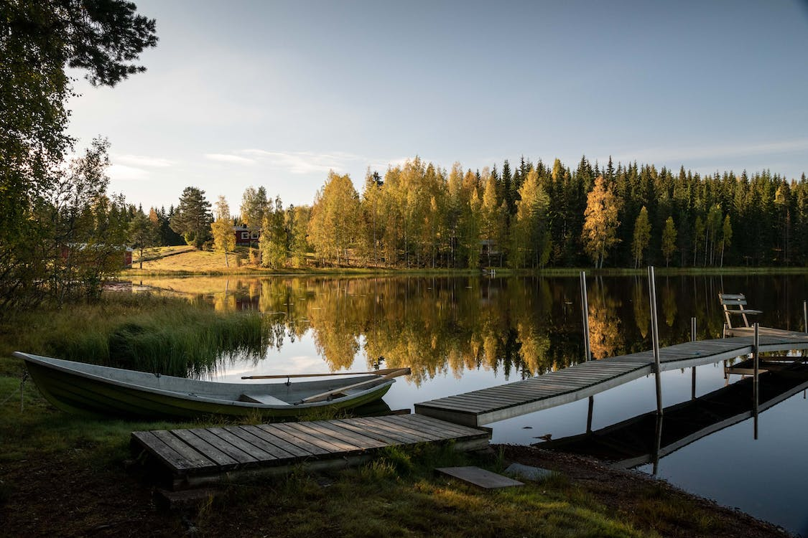

Majesteettiset Metsät
Nuuksion kansallispuiston metsät ovat täynnä elämää ja tarjoavat upeita maisemia vuoden jokaisena aikana.
Nuuksion kansallispuiston metsät ovat täynnä elämää ja tarjoavat upeita maisemia vuoden jokaisena aikana.

Haukkalammen ympäristö tarjoaa unohtumattomia hetkiä tähtitaivaan alla, erityisesti selkeinä syysiltoina.
Nuuksion vesistöt, kuten Pitkäjärvi, ovat paitsi rauhoittavia myös upeita kuvauskohteita erityisesti syksyisin.